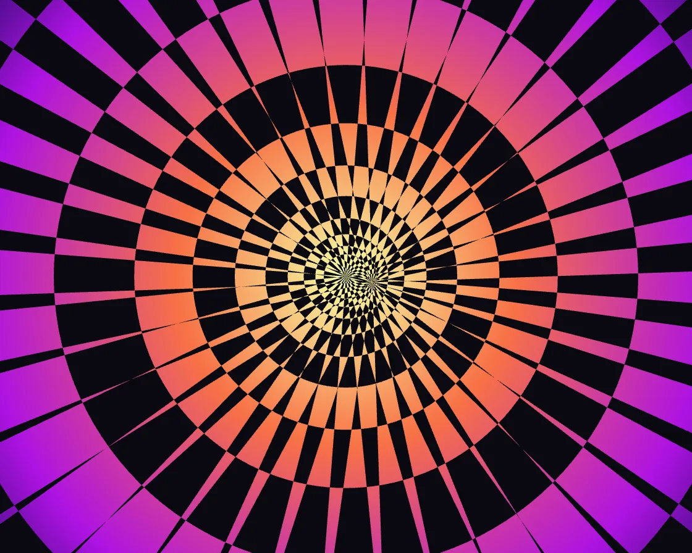

Starburst
Starburst is a Canvas effect: counter-rotating ray fans and zooming rings, combined with a difference blend. One plain JavaScript file with no dependencies; add it with npx motion-library add starburst.

Open it live, tune it and copy the code
What is Starburst?
A sunburst of rays spins, flickers and streams outward through bands of colour. The pointer moves a second ray fan, and the two cross into moiré arcs.
How does Starburst work?
Two counter-rotating wedge fans and log-spaced rings combined with difference blending; constant-ratio ring spacing makes the outward motion an endless zoom.
How do I add Starburst to my website?
- In your project folder, run
npx motion-library add starburst. It writesanimations/starburst.js. Needs Node 18 or newer. - Import it and call it with a container element that has a size:
import fx from './animations/starburst.js'; const stop = fx(document.querySelector('#hero')); - Call
stop()to clean up, for example when a component unmounts.
Every setting below is also a flag, so you can install it already tuned: npx motion-library add starburst --rays 48.
What settings can I tweak?
| Setting | Flag | Default | Range | Step |
|---|---|---|---|---|
| Rays | --rays | 18 | 4 to 48 | 1 |
| Speed | --speed | 1 | 0 to 3 | 0.05 |
| Rings | --rings | 1 | 0 to 1 | 0.05 |
Specifications
- Renderer
- Canvas 2D
- Category
- Generative & math
- Dependencies
- None
- File size
- 4.7 KB, unminified
- Interactive
- Yes: it responds to the pointer
- Reduced motion
- Respects prefers-reduced-motion
- Licence
- MIT-0: use it anywhere, no credit needed
Source code
// Starburst: two fans of radial wedges turning in opposite directions, combined with a difference blend, so a
// wedge over a wedge cancels to black and a wedge over a gap stays lit. The overlap pattern spins faster than either
// fan and pulses as the wedges sweep in and out of step. A set of rings flowing outward is differenced in too,
// cutting every ray into a polar checkerboard, and a radial colour wash is multiplied over the black-and-white result.
// The pointer (or an idle ghost) carries the second fan's hub: pull it off centre and the two ray fans beat into
// moiré fringes, arcs that run through both hubs.
const PARAMS = { rays: 18, speed: 1, rings: 1 };
export default function (stage) {
const canvas = document.createElement('canvas');
canvas.style.cssText = 'position:absolute;inset:0;width:100%;height:100%;display:block';
stage.append(canvas);
const ctx = canvas.getContext('2d');
const reduce = matchMedia('(prefers-reduced-motion: reduce)').matches;
let W = 0, H = 0, D = 1;
const resize = () => { D = Math.min(devicePixelRatio, 2); W = stage.clientWidth || 1; H = stage.clientHeight || 1; canvas.width = W * D | 0; canvas.height = H * D | 0; };
const ro = new ResizeObserver(resize); ro.observe(stage); resize();
function fan(cx, cy, n, rot, R) {
ctx.beginPath();
for (let i = 0; i < n; i++) { const a = rot + i * Math.PI * 2 / n, b = a + Math.PI / n; ctx.moveTo(cx, cy); ctx.arc(cx, cy, R, a, b); ctx.closePath(); }
ctx.fill();
}
// the pointer, in CSS pixels of the stage; an idle ghost takes over when nobody is pointing and circles the centre
const ghostX = g => W / 2 + Math.min(W, H) * (0.035 * Math.cos(g * 0.7) + 0.07 * Math.sin(g * 0.23 + 0.4));
const ghostY = g => H / 2 + Math.min(W, H) * (0.035 * Math.sin(g * 0.9) + 0.05 * Math.cos(g * 0.31 + 0.9));
let gt = reduce ? 3 : 0, tx = ghostX(gt), ty = ghostY(gt), mx = tx, my = ty, lastMove = -1e9, last = performance.now();
const onMove = e => { const b = canvas.getBoundingClientRect(); tx = e.clientX - b.left; ty = e.clientY - b.top; lastMove = performance.now(); };
const onLeave = () => { lastMove = -1e9; };
canvas.addEventListener('pointermove', onMove); canvas.addEventListener('pointerdown', onMove); canvas.addEventListener('pointerleave', onLeave);
let raf; const t0 = performance.now();
function frame(now) {
const t = reduce ? 3 : (now - t0) / 1000 * PARAMS.speed;
const dt = Math.min(0.05, (now - last) / 1000); last = now;
const live = now - lastMove < 2500;
if (!reduce) gt = (now - t0) / 1000 * PARAMS.speed;
if (!live) { tx = ghostX(gt); ty = ghostY(gt); }
const k = 1 - Math.exp(-dt * (live ? 14 : 3));
mx += (tx - mx) * k; my += (ty - my) * k;
ctx.setTransform(D, 0, 0, D, 0, 0);
ctx.globalCompositeOperation = 'source-over';
ctx.fillStyle = '#000'; ctx.fillRect(0, 0, W, H);
const cx = W / 2, cy = H / 2, R = Math.hypot(W, H), n = Math.round(PARAMS.rays);
ctx.fillStyle = '#fff';
fan(cx, cy, n, t * .25, R);
ctx.globalCompositeOperation = 'difference';
// the second fan turns the other way, its hub on the pointer (idle: circling near the centre, so the overlap breathes)
fan(mx, my, n, -t * .18, R * 2);
if (PARAMS.rings > 0) { // rings at log-spaced radii flowing outward: an endless zoom
const m = Math.min(W, H) * .5, q = (t * .35) % 1;
ctx.beginPath();
for (let k = -2; k < 14; k += 2) {
const r0 = m * Math.pow(1.38, k + q * 2 - 6), r1 = m * Math.pow(1.38, k + 1 + q * 2 - 6);
ctx.moveTo(cx + r1, cy); ctx.arc(cx, cy, r1, 0, Math.PI * 2); ctx.moveTo(cx + r0, cy); ctx.arc(cx, cy, r0, 0, Math.PI * 2, true);
}
ctx.globalAlpha = Math.min(1, PARAMS.rings); ctx.fill(); ctx.globalAlpha = 1;
}
// colour: a radial wash multiplied over the black-and-white figure
ctx.globalCompositeOperation = 'multiply';
const g = ctx.createRadialGradient(cx, cy, 0, cx, cy, Math.hypot(W, H) * .55);
const h = (t * 8) % 360;
g.addColorStop(0, `hsl(${h + 40} 100% 82%)`); g.addColorStop(.35, `hsl(${h + 350} 92% 62%)`); g.addColorStop(.75, `hsl(${h + 260} 85% 48%)`); g.addColorStop(1, `hsl(${h + 230} 80% 22%)`);
ctx.fillStyle = g; ctx.fillRect(0, 0, W, H);
// lift the blacks to the house near-black
ctx.globalCompositeOperation = 'lighten'; ctx.fillStyle = '#0a0910'; ctx.fillRect(0, 0, W, H);
ctx.globalCompositeOperation = 'source-over';
raf = requestAnimationFrame(frame);
}
raf = requestAnimationFrame(frame);
return () => { cancelAnimationFrame(raf); ro.disconnect(); canvas.removeEventListener('pointermove', onMove); canvas.removeEventListener('pointerdown', onMove); canvas.removeEventListener('pointerleave', onLeave); canvas.remove(); };
}